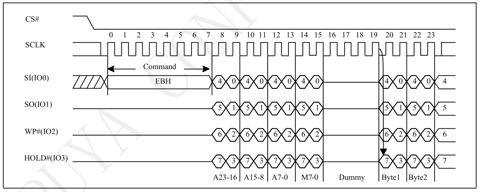

13 串行外围设备接口（SPI）
SPI全称为Serial Peripheral interface即串行外围设备接口。 SPI是一种高速同步的通信总线。一般使用四个IO：SDI（数据输入），SDO（数据输出），SCK（时钟），CS（片选）。针对Flash的QSPI则还需要使用额外的两个IO：WP（写保护），HOLD（保持）。
13.1 功能概述
- 两个SPI模块
- 支持SPI主(Master)&从(Slave)模式
- 支持Quad SPI，可以从外挂Flash执行代码
- 独立的RX&TX FIFO，深度为8个word
- 支持DMA
- 支持XIP(SPI0)
13.2 使用说明
13.2.1 时钟以及IO配置
使用模块之前，需要打开相应的时钟，并且配置IO（查看对应datasheet获取可用的IO）：
- 通过
SYSCTRL_ClearClkGateMulti打开SPI时钟，例如SPI1则需要打开SYSCTRL_ITEM_APB_SPI1。 - 配置IO的输入功能
PINCTRL_SelSpiIn，没有使用到的IO可以使用IO_NOT_A_PIN替代。 - 使用
PINCTRL_SetPadMux配置IO的输出功能。 - 对于Slave的输入，例如CLK需要保持默认低电平，则使用
PINCTRL_Pull配置IO的上拉功能。 - 打开SPI中断
platform_set_irq_callback。 - 对于时钟大于20M的使用场景，IO的选择有特殊要求，请参考
高速时钟和IO映射。
以SPI1为例，高速IO可以为：
#define SPI_MIC_CLK GIO_GPIO_7
#define SPI_MIC_MOSI GIO_GPIO_8
#define SPI_MIC_MISO GIO_GPIO_9
#define SPI_MIC_CS GIO_GPIO_10
#define SPI_MIC_WP GIO_GPIO_11
#define SPI_MIC_HOLD GIO_GPIO_12下述示例可以将指定IO映射到SPI1的Master模式：
static void setup_peripherals_spi_pin(void)
{
SYSCTRL_ClearClkGateMulti( (1 << SYSCTRL_ITEM_APB_SPI1)
| (1 << SYSCTRL_ITEM_APB_PinCtrl));
PINCTRL_SelSpiIn(SPI_PORT_1, SPI_MIC_CLK, SPI_MIC_CS, SPI_MIC_HOLD,
SPI_MIC_WP, SPI_MIC_MISO, SPI_MIC_MOSI);
PINCTRL_SetPadMux(SPI_MIC_CLK, IO_SOURCE_SPI1_CLK_OUT);
PINCTRL_SetPadMux(SPI_MIC_CS, IO_SOURCE_SPI1_CSN_OUT);
PINCTRL_SetPadMux(SPI_MIC_MOSI, IO_SOURCE_SPI1_MOSI_OUT);
platform_set_irq_callback(PLATFORM_CB_IRQ_APBSPI, peripherals_spi_isr, NULL);
}如果是Slave模式，则需要额外配置默认上拉，并且输入输出IO有区别：
static void setup_peripherals_spi_pin(void)
{
SYSCTRL_ClearClkGateMulti( (1 << SYSCTRL_ITEM_APB_SPI1)
| (1 << SYSCTRL_ITEM_APB_PinCtrl)));
PINCTRL_Pull(SPI_MIC_CLK,PINCTRL_PULL_DOWN);
PINCTRL_Pull(SPI_MIC_CS,PINCTRL_PULL_UP);
PINCTRL_SelSpiIn(SPI_PORT_1, SPI_MIC_CLK, SPI_MIC_CS, SPI_MIC_HOLD,
SPI_MIC_WP, SPI_MIC_MISO, SPI_MIC_MOSI);
PINCTRL_SetPadMux(SPI_MIC_CLK, IO_SOURCE_SPI1_CLK_OUT);
PINCTRL_SetPadMux(SPI_MIC_MISO, IO_SOURCE_SPI1_MISO_OUT);
platform_set_irq_callback(PLATFORM_CB_IRQ_APBSPI, peripherals_spi_isr, NULL);
}13.2.2 模块初始化
模块的初始化通过apSSP_DeviceParametersSet和结构体apSSP_sDeviceControlBlock实现，结构体各个参数为：
eSclkDiv：时钟分频因子，决定了SPI的时钟速率。该参数和SPI模块时钟有关，在默认配置下，SPI模块时钟为24M，eSclkDiv可以直接使用SPI_INTERFACETIMINGSCLKDIV_DEFAULT_xx宏定义。对于更高的时钟，需要首先提高SPI模块时钟，然后再计算eSclkDiv，计算公式和配置方式请参考章节其他配置->时钟配置。eSCLKPhase：上升沿还是下降沿采样，参考SPI_TransFmt_CPHA_e。eSCLKPolarity：时钟默认是低电平还是高电平，参考SPI_TransFmt_CPOL_e。eLsbMsbOrder：bit传输顺序是LSB还是MSB，默认是MSB，参考SPI_TransFmt_LSB_e。eDataSize：每个传输单位的bit个数，8/16/32bit，参考SPI_TransFmt_DataLen_e。eMasterSlaveMode：选择是Master还是Slave模式，参考SPI_TransFmt_SlvMode_e。eReadWriteMode：选择传输模式：只读/只写/同时读写，参考SPI_TransCtrl_TransMode_e。eQuadMode：选择是普通SPI还是QSPI，参考SPI_TransCtrl_DualQuad_e。eWriteTransCnt：每次发送的单位个数，每个单位eDataSize个bit，达到单位个数后，CS将会拉高，代表一次传输结束。eReadTransCnt：每次接收的单位个数，每个单位eDataSize个bit，达到单位个数后，CS将会拉高，代表一次传输结束。eAddrEn：是否需要在数据之前发送地址，只适用Master，参考SPI_TransCtrl_AddrEn_e。eCmdEn：是否需要在数据之前发送命令，只适用Master，参考SPI_TransCtrl_CmdEn_e。eInterruptMask：需要打开的SPI中断类型，比如SPI传输结束中断和FIFO中断，参考bsSPI_INTREN_xx。TxThres：触发TX FIFO中断的门限值，比如可以为eWriteTransCnt/2，参考apSSP_SetTxThres。RxThres：触发RX FIFO中断的门限值，比如可以为eReadTransCnt/2，参考apSSP_SetRxThres。SlaveDataOnly：Slave模式下生效，如果只有数据，需要设置为打开，如果包含地址eAddrEn或者命令eCmdEn，需要设置改参数为DISABLE，参考SPI_TransCtrl_SlvDataOnly_e。eAddrLen：如果打开了eAddrEn，需要选择地址长度，参考SPI_TransFmt_AddrLen_e。
具体使用请参考编程指南。
13.2.3 中断配置
通过eInterruptMask打开需要的中断:
bsSPI_INTREN_ENDINTEN：传输结束（CS拉高）之后会触发该中断。bsSPI_INTREN_TXFIFOINTEN：到达TxThres门限值之后，触发FIFO中断。bsSPI_INTREN_RXFIFOINTEN：到达RxThres门限值之后，触发FIFO中断。- 通过
apSSP_GetDataNumInRxFifo来判断当前FIFO中有效数据的个数。使用apSSP_ReadFIFO来读取FIFO中的数据，直到FIFO为空。
- 通过
13.2.4 编程指南
以下提供不同场景下的代码实现供参考。
13.2.4.1 场景1：同时读写，不使用DMA
其中SPI主（Master）和SPI从（Slave）配置为同时读写模式，CPU操作读写，没有使用DMA 配置之前需要决定使用的IO，如果是普通模式，则不需要SPI_MIC_WP和SPI_MIC_HOLD。
13.2.4.1.1 Master配置
配置IO，参考
时钟以及IO配置。模块初始化：
假设每个传输单元是32bit，则mode 0下的Master模式初始化配置为：
#define SPI_MASTER_PARAM(DataLen) { SPI_INTERFACETIMINGSCLKDIV_DEFAULT_2M, \ SPI_CPHA_ODD_SCLK_EDGES, SPI_CPOL_SCLK_LOW_IN_IDLE_STATES, \ SPI_LSB_MOST_SIGNIFICANT_BIT_FIRST, SPI_DATALEN_32_BITS, \ SPI_SLVMODE_MASTER_MODE, SPI_TRANSMODE_WRITE_READ_SAME_TIME, \ SPI_DUALQUAD_REGULAR_MODE, DataLen, DataLen, \ SPI_ADDREN_DISABLE, SPI_CMDEN_DISABLE, (1 << bsSPI_INTREN_ENDINTEN), \ 0, 0, SPI_SLVDATAONLY_ENABLE, SPI_ADDRLEN_1_BYTE }使用API
apSSP_DeviceParametersSet来初始化SPI模块：#define DATA_LEN (SPI_FIFO_DEPTH) static void setup_peripherals_spi_module(void) { apSSP_sDeviceControlBlock pParam = SPI_MASTER_PARAM(DATA_LEN); apSSP_DeviceParametersSet(APB_SSP1, &pParam); }中断实现
该示例中只打开了SPI ENDINT中断，该中断触发标志传输结束，清除中断状态
static uint32_t peripherals_spi_isr(void *user_data) { uint32_t stat = apSSP_GetIntRawStatus(APB_SSP1); if(stat & (1 << bsSPI_INTREN_ENDINTEN)) { apSSP_ClearIntStatus(APB_SSP1, 1 << bsSPI_INTREN_ENDINTEN); } }发送数据
发送数据需要填充数据到TX FIFO并且触发传输：
- 使用
apSSP_WriteFIFO写入需要传输的数据，通过apSSP_TxFifoFull来判断TX FIFO状态，写入数据直到FIFO变满。FIFO的深度为8，超过8个数据可以分为多次发送。 apSSP_WriteCmd来触发传输，此场景中eAddrEn或者eCmdEn都是关闭的，但是仍然需要填充一个任意数据（比如0x00）来触发传输。- 使用
apSSP_GetSPIActiveStatus等待发送结束，或者查看对应中断。 - 发送的数据格式和长度需要和
eDataSize等参数对应。
uint32_t write_data[DATA_LEN]; void peripherals_spi_send_data(void) { apSSP_WriteCmd(APB_SSP1, 0x00, 0x00);//trigger transfer for(i = 0; i < DATA_LEN; i++) { if(apSSP_TxFifoFull(APB_SSP1)){ break; } apSSP_WriteFIFO(APB_SSP1, write_data[i]); } while(apSSP_GetSPIActiveStatus(APB_SSP1)); }- 使用
接收数据
在SPI发送结束后，通过
apSSP_GetDataNumInRxFifo查看并读取RX FIFO中的数据。uint32_t read_data[DATA_LEN]; uint32_t num = apSSP_GetDataNumInRxFifo(APB_SSP1); for(i = 0; i < num; i++) { apSSP_ReadFIFO(APB_SSP1, &read_data[i]); }使用流程
- 设置IO，setup_peripherals_spi_pin()。
- 初始化SPI，setup_peripherals_spi_module()。
- 在需要时候发送SPI数据，peripherals_spi_send_data()。
- 检查中断状态。
13.2.4.1.2 Slave配置
配置IO，参考
时钟以及IO配置。模块初始化：
Slave的初始化和Master相同，只需要将mode切换为
SPI_SLVMODE_SLAVE_MODE：#define SPI_SLAVE_PARAM(DataLen) { SPI_INTERFACETIMINGSCLKDIV_DEFAULT_2M, \ SPI_CPHA_ODD_SCLK_EDGES, SPI_CPOL_SCLK_LOW_IN_IDLE_STATES, \ SPI_LSB_MOST_SIGNIFICANT_BIT_FIRST, SPI_DATALEN_32_BITS, \ SPI_SLVMODE_SLAVE_MODE, SPI_TRANSMODE_WRITE_READ_SAME_TIME, \ SPI_DUALQUAD_REGULAR_MODE, DataLen, DataLen, \ SPI_ADDREN_DISABLE, SPI_CMDEN_DISABLE, (1 << bsSPI_INTREN_ENDINTEN), \ 0, 0, SPI_SLVDATAONLY_ENABLE, SPI_ADDRLEN_1_BYTE }调用
apSSP_DeviceParametersSet来初始化SPI模块：static void setup_peripherals_spi_module(void) { apSSP_sDeviceControlBlock pParam = SPI_SLAVE_PARAM(DATA_LEN); apSSP_DeviceParametersSet(APB_SSP1, &pParam); }发送数据
Slave的待发送数据需要提前放到TX FIFO中。 比如在初始化之后，就可以往FIFO中填充发送数据，同时需要判断
apSSP_TxFifoFull：for(i = 0; i < DATA_LEN; i++) { if(apSSP_TxFifoFull(APB_SSP1)){ break; } apSSP_WriteFIFO(APB_SSP1, write_data[i]); }接收数据
Slave的数据接收需要在中断中进行，
bsSPI_INTREN_ENDINTEN中断代表传输结束，此时可以读取RX FIFO中的内容，如果数据长度大于FIFO深度，则需要打开RxThres，在FIFO中断中读取接收数据，或者使用DMA方式，否则数据会丢失。static uint32_t peripherals_spi_isr(void *user_data) { uint32_t stat = apSSP_GetIntRawStatus(APB_SSP1), i; if(stat & (1 << bsSPI_INTREN_ENDINTEN)) { uint32_t num = apSSP_GetDataNumInRxFifo(APB_SSP1); for(i = 0; i < num; i++) { apSSP_ReadFIFO(APB_SSP1, &read_data[i]); } apSSP_ClearIntStatus(APB_SSP1, 1 << bsSPI_INTREN_ENDINTEN); } }使用流程
- 设置IO，setup_peripherals_spi_pin()。
- 初始化SPI，setup_peripherals_spi_module()。
- 观察SPI中断，中断触发代表当前传输结束。
13.2.4.2 场景2：同时读写，使用DMA
其中SPI主从配置为同时读写模式，同时使用DMA进行读写。 配置之前需要决定使用的IO，如果是普通模式，则不需要SPI_MIC_WP和SPI_MIC_HOLD。
13.2.4.2.1 Master配置
配置IO，参考
时钟以及IO配置。模块初始化，参考场景1
Master配置。DMA初始化
使用之前需要初始化DMA模块：
static void setup_peripherals_dma_module(void) { SYSCTRL_ClearClkGateMulti(1 << SYSCTRL_ClkGate_APB_DMA); DMA_Reset(1); DMA_Reset(0); }DMA设置
- 设置DMA将指定地址的数据搬运到SPI1 TX FIFO，并打开DMA。 SPI1启动后，搬运自动开始：
void peripherals_spi_dma_to_txfifo(int channel_id, void *src, int size) { DMA_Descriptor descriptor __attribute__((aligned (8))); descriptor.Next = (DMA_Descriptor *)0; DMA_PrepareMem2Peripheral(&descriptor,SYSCTRL_DMA_SPI1_TX, src,size,DMA_ADDRESS_INC,0); DMA_EnableChannel(channel_id, &descriptor); }- 设置DMA将SPI1 RX FIFO的数据搬运到指定地址：
void peripherals_spi_rxfifo_to_dma(int channel_id, void *dst, int size) { DMA_Descriptor descriptor __attribute__((aligned (8))); descriptor.Next = (DMA_Descriptor *)0; DMA_PreparePeripheral2Mem(&descriptor,dst,SYSCTRL_DMA_SPI1_RX, size,DMA_ADDRESS_INC,0); DMA_EnableChannel(channel_id, &descriptor); }中断实现
该示例中只打开了SPI ENDINT中断，该中断触发标志传输结束，清除中断状态
static uint32_t peripherals_spi_isr(void *user_data) { uint32_t stat = apSSP_GetIntRawStatus(APB_SSP1); if(stat & (1 << bsSPI_INTREN_ENDINTEN)) { apSSP_ClearIntStatus(APB_SSP1, 1 << bsSPI_INTREN_ENDINTEN); } }接收数据配置
- 首先需要打开 SPI 模块中的DMA功能
apSSP_SetRxDmaEn。 - 设置每次传输时接收和发射的个数，改参数已经在模块初始化中设置过了，此处为可选项，如果需要更新，可以通过
apSSP_SetTransferControlRdTranCnt和apSSP_SetTransferControlWrTranCnt来更新。注意：该场景下，发射和接收的个数需要相同。 - 配置DMA。
#define SPI_DMA_RX_CHANNEL (1)//DMA channel 1 uint32_t read_data[DATA_LEN]; void peripherals_spi_read_data(void) { apSSP_SetRxDmaEn(APB_SSP1,1); apSSP_SetTransferControlRdTranCnt(APB_SSP1,DATA_LEN); peripherals_spi_rxfifo_to_dma(SPI_DMA_RX_CHANNEL, read_data, sizeof(read_data)); }- 首先需要打开 SPI 模块中的DMA功能
发送数据配置
类似于接收，发射需要打开SPI的DMA功能，并且配置DMA。
#define SPI_DMA_TX_CHANNEL (0)//DMA channel 0 uint32_t write_data[DATA_LEN]; void peripherals_spi_push_data(void) { apSSP_SetTxDmaEn(APB_SSP1,1); apSSP_SetTransferControlWrTranCnt(APB_SSP1,DATA_LEN); peripherals_spi_dma_to_txfifo(SPI_DMA_TX_CHANNEL, write_data, sizeof(write_data)); }发送数据
- 在需要发送数据时，通过DMA填充待发射数据到TX FIFO。
- 配置接收数据的DMA，同时读写模式下，发射和接收同步进行。
- 配置命令触发传输。
- 等待发射结束
apSSP_GetSPIActiveStatus，关闭DMA功能。
void peripherals_spi_send_data(void) { peripherals_spi_read_data(); peripherals_spi_push_data(); apSSP_WriteCmd(APB_SSP1, 0x00, 0x00);//trigger transfer while(apSSP_GetSPIActiveStatus(APB_SSP1)); apSSP_SetTxDmaEn(APB_SSP1,0); }使用流程
- 设置IO，setup_peripherals_spi_pin()。
- 初始化SPI，setup_peripherals_spi_module()。
- 初始化DMA，setup_peripherals_dma_module()。
- 在需要时候发送SPI数据，peripherals_spi_send_data()。
- 检查中断状态。
13.2.4.2.2 Slave配置
配置IO，参考
时钟以及IO配置。模块初始化，参考场景1
Slave配置。DMA初始化，与Master的DMA初始化相同，参考
setup_peripherals_dma_module。DMA设置，与Master的DMA设置相同，参考
peripherals_spi_dma_to_txfifo和peripherals_spi_rxfifo_to_dma。接收数据配置，与Master相同，参考
peripherals_spi_read_data。发送数据配置，与Master相同，参考
peripherals_spi_push_data。传输前准备
- 对于Slave，如果需要在第一次传输时发送数据，则需要提前将需要发送的数据配置到DMA，配置
peripherals_spi_push_data。 - 使用
peripherals_spi_read_data配置接收DMA，等待Master传输。
peripherals_spi_read_data(); peripherals_spi_push_data();- 对于Slave，如果需要在第一次传输时发送数据，则需要提前将需要发送的数据配置到DMA，配置
中断实现
bsSPI_INTREN_ENDINTEN的触发代表当前传输结束。- 检查接收数据。
- 如果需要准备下一次传输，使用
peripherals_spi_read_data建立接收DMA。 - 如果需要准备下一次传输，准备发送数据，使用
peripherals_spi_push_data建立发射DMA。 - 清除中断标志。
static uint32_t peripherals_spi_isr(void *user_data) { uint32_t stat = apSSP_GetIntRawStatus(APB_SSP1); if(stat & (1 << bsSPI_INTREN_ENDINTEN)) { peripherals_spi_read_data(); peripherals_spi_push_data(); apSSP_ClearIntStatus(APB_SSP1, 1 << bsSPI_INTREN_ENDINTEN); } }使用流程
- 设置IO，setup_peripherals_spi_pin()。
- 初始化SPI，setup_peripherals_spi_module()。
- 初始化DMA，setup_peripherals_dma_module()。
- 设置接收DMA，peripherals_spi_read_data()。
- 设置发射DMA，peripherals_spi_push_data()。
- 观察SPI中断，中断触发代表当前接收结束。
13.2.5 其他配置
13.2.5.1 时钟配置（pParam.eSclkDiv）
13.2.5.1.1 默认配置
对于默认配置，SPI时钟的配置通过 pParam.eSclkDiv 来实现，计算公式为：\((spi\quad interface\quad clock)/(2\times(eSclkDiv + 1))\)，其中默认配置下，spi interface clock 为24M，因此可以得到不同时钟下的eSclkDiv：
#define SPI_INTERFACETIMINGSCLKDIV_DEFAULT_6M (1)
#define SPI_INTERFACETIMINGSCLKDIV_DEFAULT_4M (2)
#define SPI_INTERFACETIMINGSCLKDIV_DEFAULT_3M (3)
#define SPI_INTERFACETIMINGSCLKDIV_DEFAULT_2M4 (4)
#define SPI_INTERFACETIMINGSCLKDIV_DEFAULT_2M (5)13.2.5.1.2 高速时钟配置
SPI0和SPI1的高速时钟配置有一些不同，注意：高速时钟需要使用特定的IO，请查看SPI高速时钟和pin的映射。
13.2.5.1.2.1 SPI0
对于更高的时钟，需要在配置pParam.eSclkDiv之前打开额外配置，打开方式如下
首先通过
SYSCTRL_GetPLLClk()获取PLL时钟，此处假设为336M。切换SPI0到高速时钟
SYSCTRL_SelectSpiClk(SPI_PORT_0,SYSCTRL_CLK_HCLK+1),此处的入参代表分频比2，即最终的spi interface clock为\(336/2 = 168.0M\)。通过计算公式\((spi\quad interface\quad clock)/(2\times(eSclkDiv + 1))\) 得到不同时钟下的
eSclkDiv。通过
SYSCTRL_GetClk(SYSCTRL_ITEM_AHB_SPI0)来确认interface clock是否生效。
在以上举例中，可以使用以下宏定义来配置pParam.eSclkDiv
#define SPI_INTERFACETIMINGSCLKDIV_SPI0_21M (1)
#define SPI_INTERFACETIMINGSCLKDIV_SPI0_14M (2)以下的API可以实现相同的功能，假设PLL时钟为336M，入参为21000000(21M),则该API可以完成SPI0时钟配置，并且返回eSclkDiv。入参需要和PLL成倍数关系。
uint8_t setup_peripherals_spi_0_high_speed_interface_clk(uint32_t spiClk)
{
//for spi0 only
uint8_t eSclkDiv = 0;
uint32_t spiIntfClk;
uint32_t pllClk = SYSCTRL_GetPLLClk()；
SYSCTRL_SelectSpiClk(SPI_PORT_0,SYSCTRL_CLK_PLL_DIV_1+1);
spiIntfClk = SYSCTRL_GetClk(SYSCTRL_ITEM_AHB_SPI0);
eSclkDiv = ((spiIntfClk/spiClk)/2)-1;
return eSclkDiv;
}调用方式为：
pParam.eSclkDiv = setup_peripherals_spi_0_high_speed_interface_clk(21000000);13.2.5.1.2.2 SPI1
对于更高的时钟，需要在配置pParam.eSclkDiv之前打开HCLK配置，打开方式如下：
首先查看HCLK频率:
SYSCTRL_GetHClk()。- 如果有需要可以使用
SYSCTRL_SelectHClk(SYSCTRL_CLK_PLL_DIV_1+3);来修改HCLK时钟。修改方法为，首先使用SYSCTRL_GetPLLClk()获取PLL时钟，入参为分频比，假如PLL时钟为336M，则SYSCTRL_CLK_PLL_DIV_1+6为7分频，最终HClk为336/7=48M。
- 如果有需要可以使用
将SPI1时钟切换到HCLK:
SYSCTRL_SelectSpiClk(SPI_PORT_1,SYSCTRL_CLK_HCLK)。通过计算公式\((spi\quad interface\quad clock)/(2\times(eSclkDiv + 1))\) 得到不同时钟下的
eSclkDiv。通过
SYSCTRL_GetClk(SYSCTRL_ITEM_APB_SPI1)来确认interface clock是否生效。
假设HCLK为112M（即spi interface clock），通过计算公式可以得到不同时钟下的eSclkDiv为：
#define SPI_INTERFACETIMINGSCLKDIV_SPI1_19M (2)
#define SPI_INTERFACETIMINGSCLKDIV_SPI1_14M (3)以下的API可以实现相同的功能，假设HCLK时钟为112M，入参为14000000(14M),则该API可以完成SPI1时钟配置，并且返回eSclkDiv。入参需要和HCLK成倍数关系
uint8_t setup_peripherals_spi_1_high_speed_interface_clk(uint32_t spiClk)
{
uint8_t eSclkDiv = 0;
uint32_t spiIntfClk;
uint32_t hClk = SYSCTRL_GetHClk();
SYSCTRL_SelectSpiClk(SPI_PORT_1,SYSCTRL_CLK_HCLK);
spiIntfClk = SYSCTRL_GetClk(SYSCTRL_ITEM_APB_SPI1);
eSclkDiv = ((spiIntfClk/spiClk)/2)-1;
return eSclkDiv;
}调用方式为：
pParam.eSclkDiv = setup_peripherals_spi_1_high_speed_interface_clk(14000000);13.2.5.2 QSPI 使用
QSPI的bit顺序以及MOSI/MISO的含义和普通SPI不同，但大部分读写的配置是共享的。 使用QSPI需要在普通SPI的配置的基础上，做一些额外修改：
13.2.5.2.1 IO 配置
QSPI用到了CLK,CS,MOSI,MISO,HOLD,WP,主从都需要配置为输入输出：
PINCTRL_SelSpiIn(SPI_PORT_1, SPI_MIC_CLK, SPI_MIC_CS, SPI_MIC_HOLD,
SPI_MIC_WP, SPI_MIC_MISO, SPI_MIC_MOSI);
PINCTRL_SetPadMux(SPI_MIC_CLK, IO_SOURCE_SPI1_CLK_OUT);
PINCTRL_SetPadMux(SPI_MIC_CS, IO_SOURCE_SPI1_CSN_OUT);
PINCTRL_SetPadMux(SPI_MIC_MOSI, IO_SOURCE_SPI1_MOSI_OUT);
PINCTRL_SetPadMux(SPI_MIC_MISO, IO_SOURCE_SPI1_MISO_OUT);
PINCTRL_SetPadMux(SPI_MIC_WP, IO_SOURCE_SPI1_WP_OUT);
PINCTRL_SetPadMux(SPI_MIC_HOLD, IO_SOURCE_SPI1_HOLD_OUT);对于Slave，则还需要额外配置CS的内部上拉：
PINCTRL_Pull(SPI_MIC_CLK,PINCTRL_PULL_DOWN);
PINCTRL_Pull(SPI_MIC_CS,PINCTRL_PULL_UP);13.2.5.2.2 QSPI Master
13.2.5.2.2.1 pParam 配置
QSPI的部分pParam参数需要修改为如下，同时Addr和Cmd需要打开：
pParam.eQuadMode = SPI_DUALQUAD_QUAD_IO_MODE;
pParam.SlaveDataOnly = SPI_SLVDATAONLY_DISABLE;
pParam.eAddrEn = SPI_ADDREN_ENABLE;
pParam.eCmdEn = SPI_CMDEN_ENABLE;此外，Master还需要配置pParam.eReadWriteMode, 例如：
SPI_TRANSMODE_WRITE_READ： 读和写顺序执行，比如首先利用四线完成写操作，然后再读。SPI_TRANSMODE_WRITE_DUMMY_READ： 先写后读，在Write和Read之间添加dummy（默认为8个clk cycle）。
对于Slave，则读写顺序相反：
SPI_TRANSMODE_READ_WRITE：先读后写。SPI_TRANSMODE_READ_DUMMY_WRITE： 先读后写，在Read和Write之间添加dummy（默认为8个clk cycle）。
SPI_TransCtrl_TransMode_e定义了可以使用的pParam.eReadWriteMode。
配置参数举例：
#define SPI_MASTER_PARAM(DataLen) { SPI_INTERFACETIMINGSCLKDIV_DEFAULT_2M, \
SPI_CPHA_ODD_SCLK_EDGES, SPI_CPOL_SCLK_LOW_IN_IDLE_STATES, \
SPI_LSB_MOST_SIGNIFICANT_BIT_FIRST, SPI_DATALEN_32_BITS, SPI_SLVMODE_MASTER_MODE, \
SPI_TRANSMODE_WRITE_DUMMY_READ, SPI_DUALQUAD_QUAD_IO_MODE, DataLen, DataLen, \
SPI_ADDREN_ENABLE, SPI_CMDEN_ENABLE, (1 << bsSPI_INTREN_ENDINTEN), \
0, 0, SPI_SLVDATAONLY_DISABLE, SPI_ADDRLEN_1_BYTE }
#define SPI_SLAVE_PARAM(DataLen) { SPI_INTERFACETIMINGSCLKDIV_DEFAULT_2M, \
SPI_CPHA_ODD_SCLK_EDGES, SPI_CPOL_SCLK_LOW_IN_IDLE_STATES, \
SPI_LSB_MOST_SIGNIFICANT_BIT_FIRST, SPI_DATALEN_32_BITS, SPI_SLVMODE_SLAVE_MODE, \
SPI_TRANSMODE_READ_DUMMY_WRITE, SPI_DUALQUAD_QUAD_IO_MODE, DataLen, DataLen, \
SPI_ADDREN_ENABLE, SPI_CMDEN_ENABLE, (1 << bsSPI_INTREN_ENDINTEN), \
0, 0, SPI_SLVDATAONLY_DISABLE, SPI_ADDRLEN_1_BYTE }13.2.5.2.2.2 Dummy cnt 配置
pParam.eReadWriteMode中指定了dummy的位置，通过apSSP_SetTransferControlDummyCnt配置dummy个数。
API的入参为dummy cnt，通过以下关系转换成API CLK的dummy cycles。
\(cycles = (dummy \quad cnt + 1) \times ((pParam.eDataSize) / (spi \quad io \quad width))\)
| dummy cnt + 1 | pParam.eDataSize | spi io width | cycles |
|---|---|---|---|
| 1 | 8 | 1(single) | 8 |
| 1 | 32 | 4(quad-qspi) | 8 |
以上述的参数配置为例，则下述API可以将dummy cycle配置为16：
apSSP_SetTransferControlDummyCnt(APB_SSP1, 1);//dummy cnt = 1;注意，额外的配置需要在apSSP_DeviceParametersSet之后以避免参数覆盖。
13.2.5.2.2.3 Addr 格式
QSPI的Command和Addr通过apSSP_WriteCmd配置，首先发送Command，Command固定占用MOSI的8个cycle， 然后发送Addr，Addr的长度通过pParam.eAddrLen配置，发送格式通过apSSP_SetTransferControlAddrFmt配置。
- SPI_ADDRFMT_SINGLE_MODE: 默认配置，Addr只占用MOSI
- SPI_ADDRFMT_QUAD_MODE：Addr以QSPI的模式发送，占用MOSI,MISO,WP,HOLD
该API只适用于SPI Master。 假如Addr配置为3字节以及QUAD MODE，则传输格式为：
13.2.5.2.2.4 QSPI 读取和XIP
当通过SPI外接FLASH模块的时候，可以通过芯片内置功能直接读取FLASH内容而不需要操作SPI。该功能只支持SPI0。
操作步骤为，
首先打开时钟并且配置SPI IO， 参考
时钟以及IO配置。对于QSPI，请参考QSPI的IO配置。IO必须使用
高速时钟和IO映射中SPI0的指定IO。然后需要额外打开SPI的直接读取功能（不需要其他的SPI模块配置）
void apSSP_SetMemAccessCmd(SSP_TypeDef *SPI_BASE, apSSP_sDeviceMemRdCmd cmd);cmd用来选择FLASH的读取命令，该命令需要查看对应的FLASH手册来获取。apSSP_sDeviceMemRdCmd中 列出了所有支持的读取命令以及该命令的格式：
typedef enum
{
SPI_MEMRD_CMD_03 = 0 ,//read command 0x03 + 3bytes address(regular mode) + data (regular mode)
SPI_MEMRD_CMD_0B = 1 ,//read command 0x0B + 3bytes address(regular mode) + 1byte dummy + data (regular mode)
SPI_MEMRD_CMD_3B = 2 ,//read command 0x3B + 3bytes address(regular mode) + 1byte dummy + data (dual mode)
SPI_MEMRD_CMD_6B = 3 ,//read command 0x6B + 3bytes address(regular mode) + 1byte dummy + data (quad mode)
SPI_MEMRD_CMD_BB = 4 ,//read command 0xBB + 3bytes + 1byte 0 address(dual mode) + data (dual mode)
SPI_MEMRD_CMD_EB = 5 ,//read command 0xEB + 3bytes + 1byte 0 address(quad mode) + 2bytes dummy + data (quad mode)
SPI_MEMRD_CMD_13 = 8 ,//read command 0x13 + 4bytes address(regular mode) + data (regular mode)
SPI_MEMRD_CMD_0C = 9 ,//read command 0x0C + 4bytes address(regular mode) + 1byte dummy + data (regular mode)
SPI_MEMRD_CMD_3C = 10,//read command 0x3C + 4bytes address(regular mode) + 1byte dummy + data (dual mode)
SPI_MEMRD_CMD_6C = 11,//read command 0x6C + 4bytes address(regular mode) + 1byte dummy + data (quad mode)
SPI_MEMRD_CMD_BC = 12,//read command 0xBC + 4bytes + 1byte 0 address(dual mode) + data (dual mode)
SPI_MEMRD_CMD_EC = 13,//read command 0xEC + 4bytes + 1byte 0 address(quad mode) + 2bytes dummy + data (quad mode)
}apSSP_sDeviceMemRdCmd;以SPI_MEMRD_CMD_EB为例，该命令的格式为：command(0xEB)+address(4bytes)+dummy(2bytes)+data(quad mode) 
- 直接读取外置FLASH的内容
外置FLASH的内容映射在AHB_QSPI_MEM_BASE开始的连续空间（32MB）。
- 使用举例：
setup_peripherals_spi_pin();
apSSP_SetMemAccessCmd(AHB_SSP0, SPI_MEMRD_CMD_EB);
// read by *((uint8_t*)AHB_QSPI_MEM_BASE + i), i=[0,32MB)- XIP
通过SPI模块下载程序到外置FLASH模块，然后跳转到外置FLASH地址来执行代码。
13.2.5.3 高速时钟和IO映射
只有SPI0支持XIP，最大时钟速率和VBAT有关：
| Function | SPI0 | SPI1 |
|---|---|---|
| XIP | 最大速率：96M（取决于VBAT） | 不支持 |
SPI0和SPI1最大可以支持的时钟在不同场景下有区别：
| Function | SPI0 | SPI1 |
|---|---|---|
| Master | 传输中只有读或者写：96M | 24M |
| Master | 传输中既有读也有写：48M | 24M |
| Slave | 24M | 24M |
高速时钟对IO能力有要求，因此对于时钟大于20M的情况，需要使用以下固定的IO，其中SPI0的IO映射固定。对于SPI1，SCLK必须使用IO7，其他IO8/9/10/11/12可以任意配置。
| SPI0 | SPI1 |
|---|---|
| GPIO36:CS | GPIO7: SCLK |
| GPIO37:SCLK | GPIO8: CS/HOLD/WP/MISO/MOSI |
| GPIO38:HOLD | GPIO9: CS/HOLD/WP/MISO/MOSI |
| GPIO39:WP | GPIO10:CS/HOLD/WP/MISO/MOSI |
| GPIO40:MISO | GPIO11:CS/HOLD/WP/MISO/MOSI |
| GPIO41:MOSI | GPIO12:CS/HOLD/WP/MISO/MOSI |